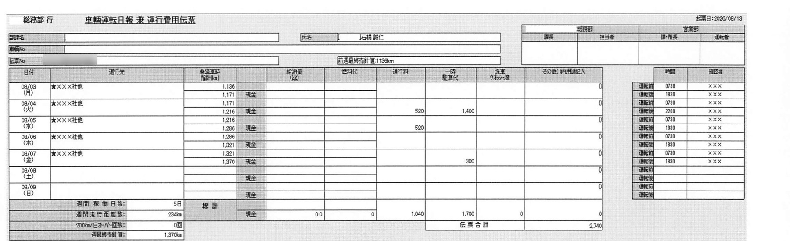
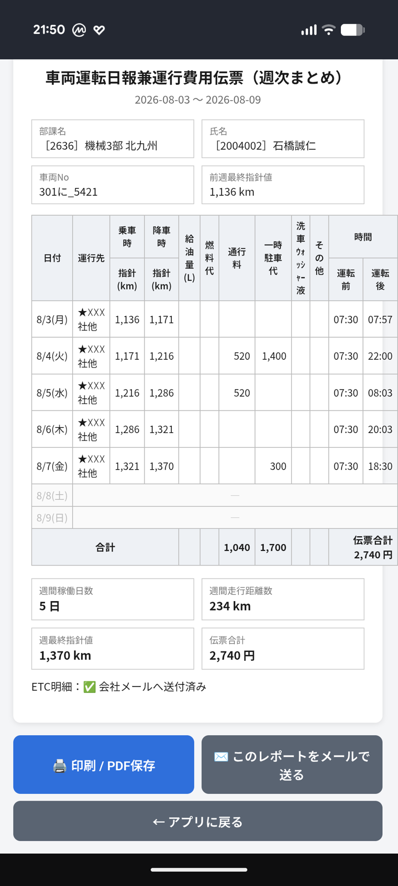

卒業制作『自分の武器を作る』
面倒だと感じた自分を、助ける仕組み
メタろぐ
社有車の運転日報を、思い出す作業から解放するスマホアプリ
＋ その導入を総務部へ通すための提案文
＋ その導入を総務部へ通すための提案文
掴み
先週の水曜日、
車を降りたときのメーター、
覚えていますか。
私は毎週、これを思い出そうとしていました。
結論
CONCLUSION
思い出す作業が消えて、
1件7〜10分が3分になりました
7-10分→
3分
週1回・必ず提出する「車輌運転日報 兼 運行費用伝票」。
いまは、スマホが出したレポートを見て写すだけです。
いまは、スマホが出したレポートを見て写すだけです。
結論
実物
これは先週、実際に精算を終えた伝票です

思い出しても、電卓を叩いてもいません。スマホの画面を見て、そのまま写しました。
なぜ
PROBLEM
重かったのは、書く手間ではなく
「思い出す」手間でした
🧠
思い出す
月曜の朝、何キロだったか。記憶をたぐる
✍️
計算する
前日との差を引き算して走行距離を出す
🕰️
遡る
勤怠履歴を開いて、降車時刻を探しにいく
1件あたり7〜10分。優先度は低い。だから、後回しになります。
なぜ
PROBLEM
後回しは、月末にまとめて跳ね返ってきます
😩
面倒
気が重い
→
📅
先延ばし
今週もいいか
→
📚
4週間分をまとめて
記憶はもう無い
→
🏢
月末に決裁が集中
承認する側も渋滞
自分ひとりの面倒に見えて、実はチームの詰まりでした。
どうやって
会社のPCには、
何ひとつ入れられません。
だから私は、スマホの画面で完結させました。
——ここで止まっていました。
——ここで止まっていました。
どうやって
8月7日・設計思想の発表
仲間の一言が、90点を100点に変えました
私が止めていた思考
→
問い直したあと
制約は、諦める理由ではなく設計条件だった。
どうやって
HOW
隙間時間に入れて、完成版が自分に届く
📱
その場で入力
払った瞬間・降りた瞬間
→
📄
会社様式に整形
距離も合計も自動
→
✉️
自分のPCへメール
サーバーは持たない
→
🖥️
見て写すだけ
会社PCは非改変
サーバーなし・データベースなし・API課金なし。運用コストは0円です。
どうやって
SCREENS
入力は増やさず、出力だけを完成品に近づける

隙間時間に、その場で記録

会社様式そのままのレポート
タグを押したときだけ
金額欄が出る。
手数は増やさない。
金額欄が出る。
手数は増やさない。
運行先も時刻も既定値を持たせ、
例外のときだけ入力します。
例外のときだけ入力します。
どうなるか
RESULT
実測は1人分。
けれど、渡せる形になりました
3分
1件あたり（実測）
16分
1人・1ヶ月
約13時間
4名・1年
紙で委任
事務職へ渡せば入力ごと
全社200人なら年間640時間——という数字も出せます。
ただし実測は私1人分。そこを主役にはしませんでした。
ただし実測は私1人分。そこを主役にはしませんでした。
どうなるか
提案スキルでの気づき
相手の問いは「良いか悪いか」ではなく
「上に説明しきれるか」でした
最初の提案文｜1,100字
→
書き直した提案文｜550字
説得するのをやめて、相手の仕事を先に肩代わりした。
お願い
半年間ご一緒した皆さんへ｜持ち帰ってほしい4つ
1
題材は「毎週うんざりしていること」から
立派な課題を探しに行かなくていい。逃げたくなる作業ほど、動機が切れない
2
ゴールの絵を、先に手元に置く
埋めるべき伝票の実物があったから、逆算で作るものが決まった
3
制約は、諦める理由ではなく設計条件
入れられないまま届ける方法を考えたら、形のほうが決まった
4
90点→100点は、他人の目でしか越えられない
8月7日のあの一言がなければ、私は満足して終わっていた
作ったのはアプリではなく、「面倒だ」と感じた自分を助ける仕組み。
その仕組みは、誰かに渡せます。
その仕組みは、誰かに渡せます。